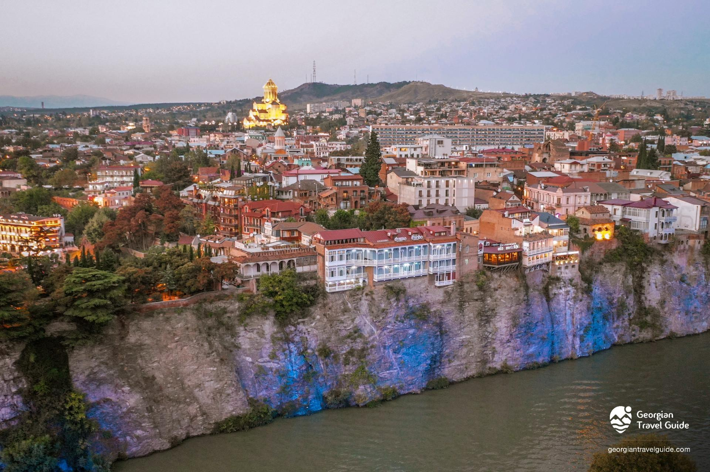
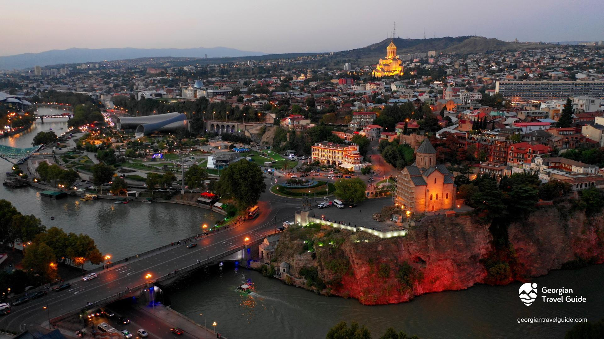

მეტეხი — ისტორიული უბანი მდინარე მტკვრის მარცხენა ნაპირზე კლდოვან შემაღლებაზე ავლაბარში, თბილისი. ეს ყველაზე ადრეული დასახლება იყო ქალაქის ტერიტორიაზე. ტრადიციული რწმენით მეფე ვახტანგ I გორგასალმა აქ ეკლესია (მეტეხის ღვთისმშობლის შობის სახელობის ტაძარი) და ციხესიმაგრე აღმართა, რომელიც ასევე მეფის რეზიდენციის ფუნქციას ა სრულებდა. აქედან მომდინარეობს სახელი მეტეხი.
ამ ადგილზე, V საუკუნეში წმ. შუშანიკ წამებული დაკრძალეს. გადმოცემის მიხედვით მეტეხის კლდე წმიდა აბო ტფილელის წამების ადგილი უნდა ყოფილიყო (VIII ს.), რომელიც თბილისის მფარველი წმინდანია.
მეტეხის მიდამო მტკვრის საპირისპირო სანაპიროსთან რკინაბეტონის ხიდითაა დაკავშირებული, რომელიც 1951 წელს აიგო ორი ძველი ხიდის ადგილას.მეტეხის ეკლესიიდან ხედები იშლება ძველ თბილისზე, ნარიყალას ციხესიმაგრეზე, აბანოთუბანზე, მშვიდობის ხიდზე, რიყის პარკზე. ეს ადგილები ძველი თბილისის სახეა.